Okinoshima, Shimane: things to do, food and stays
Okinoshima · Shimane
Okinoshima
Highlighted on the Shimane map.

Stay
新屋敷-wine & stay shinyashiki-
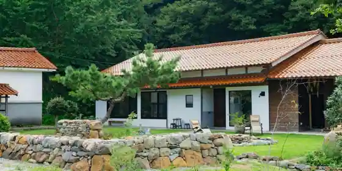
Shinyashiki -wine & stay shinyashiki
Inn in Inochi, Okinoshima with one group per day.
勝馬屋の里
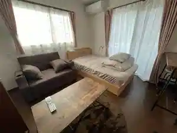
Kachiuma Ya No Sato
民宿喜兵衛
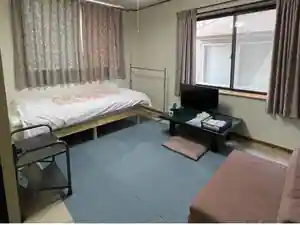
Minshuku Kihe
Family-run minshuku in Minato, Okinoshima with business travelers and long stays.
栄町 勝馬屋の里
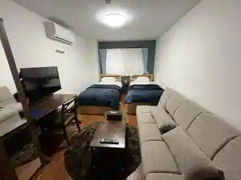
Sakaemachi Kachiuma Ya No Sato
Ｈｉｔｏ＿Ｎａｋａ
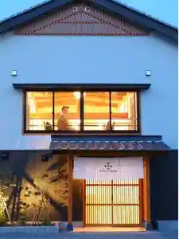
Hito _ Naka
Inn in Minato, Okinoshima with a renovated traditional house.
旅館 松浜
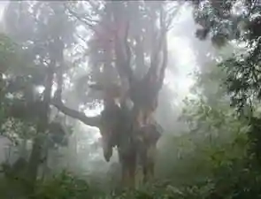
Ryokan Shohin
Ryokan inn in Minato, Okinoshima with Wi-Fi.
隠岐シーサイド岬
Oki Shisaido Misaki
隠岐プラザホテル
Oki Plaza Hotel
ＨＯＴＥＬ ここ
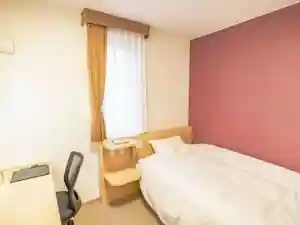
HOTEL Koko
隠岐ビューポートホテル
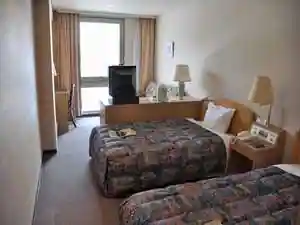
Oki Byupoto Hotel
ｈｏｔｅｌ のち
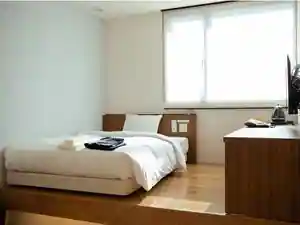
hotel Nochi
こころ旅館
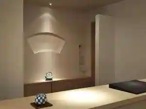
Kokoro Ryokan
Ryokan inn in Higashi, Okinoshima with kaiseki dinners.
Dining
味乃蔵
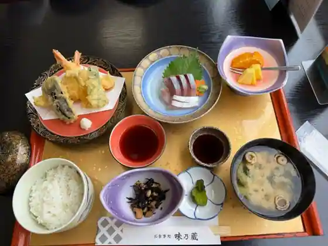
Aji No Kura
さざえ村 汽船場店
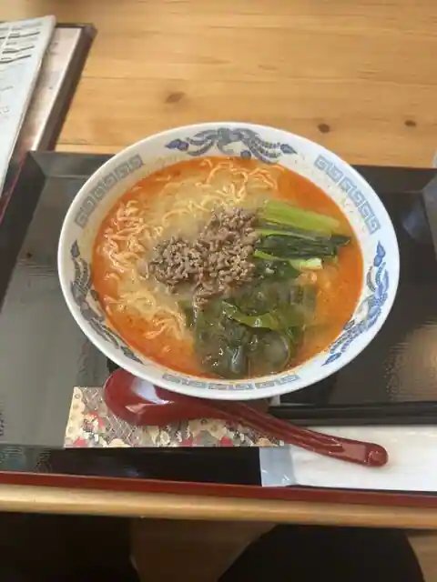
Sazae Mura Kisen Ba
フィッシャーマンズ・ワーフ隠岐
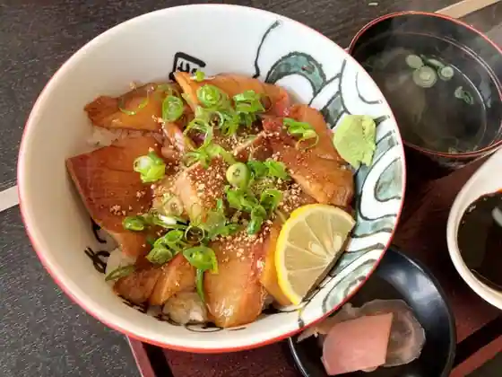
Fisshamanzu Wafu Oki
あんづ
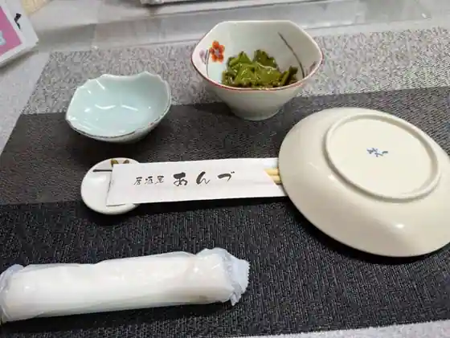
Anzu
青柳
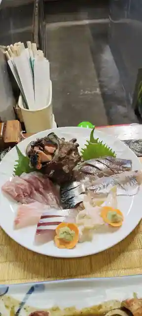
Aoyagi
さざえ村 本店
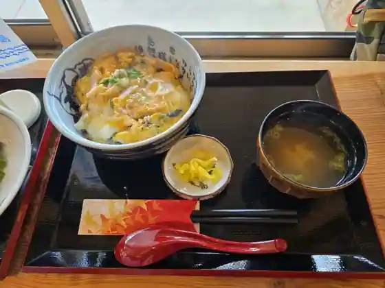
Sazae Mura Hon
八百杉
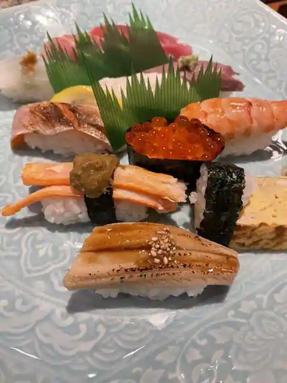
Happyaku Sugi
羽衣荘
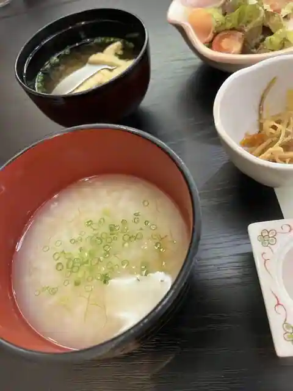
Hagoromo So
MS Home
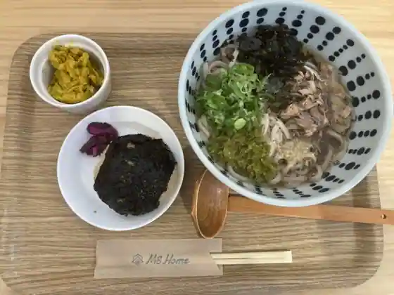
MS Home
ホテル海音里
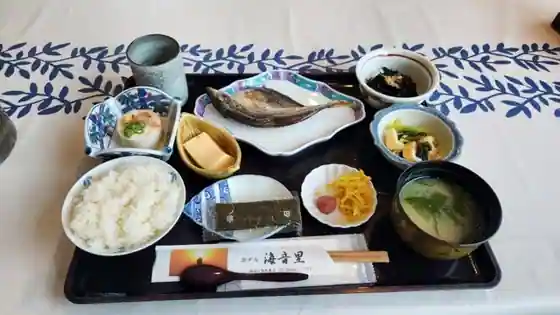
Hotel Kaion Sato
マスヤ
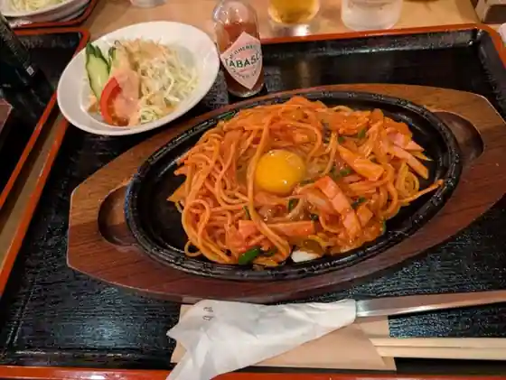
Masuya
居酒屋 点
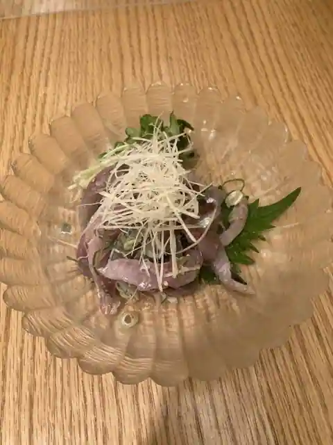
Izakaya
Café BLANC
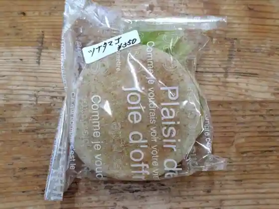
Caf E BLANC
喫茶 ゆらぎ
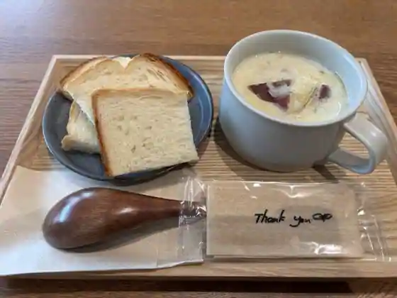
Kissa Yuragi
100タロー コーヒー
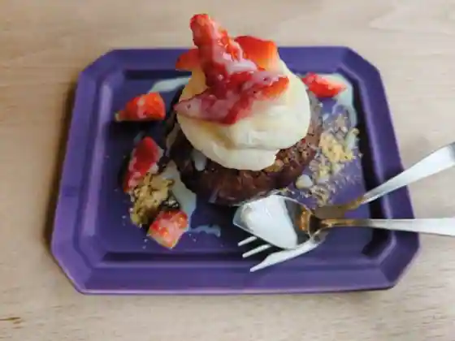
100 Taro Coffee
あいらんどパークホテル
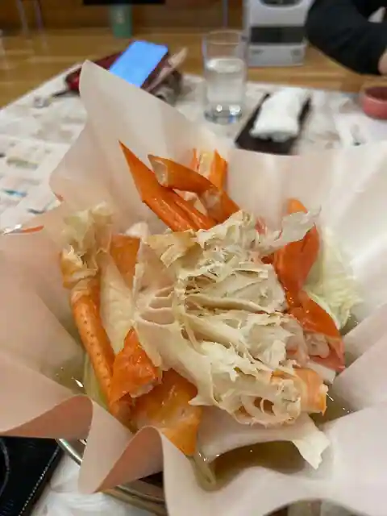
Airando Park Hotel
喫茶 木かげ
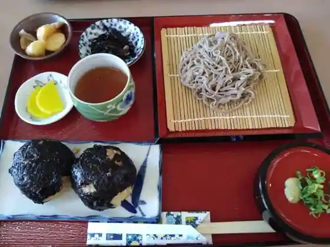
Kissa Ki Kage
DOZi
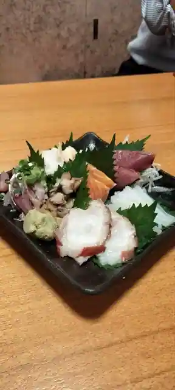
DOZi
お好み焼てっちゃん
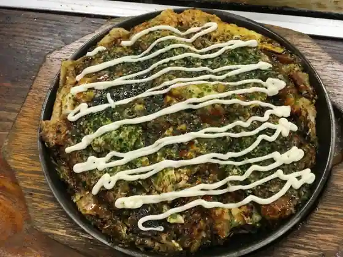
O Konomi Yaki Tetchan
サカータブロス
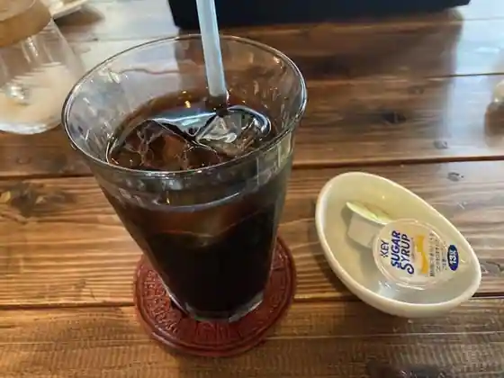
Sakataburosu
勇花理
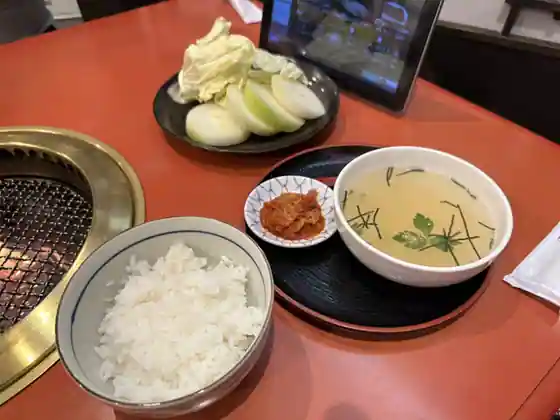
Isami Hana Ri
Sights
Rosoku Shima
Dan Kagami Falls

Mizu Jaku Su Shrine

Naka Village Campground Sazae Village

Tama Jaku Su Inochi Shrine

Iwakura no Chibusa Sugi
Oki Onsen GOKA
Tama Jaku Su Inochi Shrine no Happyaku Sugi
Goryo Kai Furyu
Yui no Mae no Su
Oki Sekai Jio Park Airport
Na Kyu Misaki
Oki Momodomu
Rosoku Shima Yuransen
Ya Na no Matsubara Fune Koya Gun
Oki no Ushi Tsuki
Oki Shizen Kan (Oki Jiogetoei 2 Kai)
Oki Kokubunji
Kabura Sugi
Oki Takeyoshi Matsuri Furyu
Shiro Shima Coast
Oki Poto Plaza
Goka Sosei Kan
Daiman Terayama
Oku Shi Kaho Mono Dono
Tokage Iwa
Aji no Kura
Oki Kokubunji Renge Emai
Murakami Ie Oki Shakunage Sono
Yui no Ike
Oyama Shrine
Seken Sakura
Agonashi Jizo
Oki Fuse Coast
Dan Kagami Jinja Hassaku Festival (Ushi Tsuki)
Tama Jaku Su Inochi Jinja Kofun Gun
Ushi Tsuki Natsubasho Taikai
Goka Murakami Ie Shakunage Festival
Naka Village Beach
Shima Festival
Takada Shrine
Ten Takeshi Kin Kusa Shrine
Taira Jinja Burial Mound
Washigamine Oyobi Tokage Iwa
“ Shima no Hikari ” Ga Sai Nasu Umi no Yado Hagoromo So
Yoshiura Yaeijo
Kasuga no Hama Beach
Fisshamanzuwafu Oki
Tachigi Campground
Mimoza Campground
Shin Residence
Hotel Kaion Sato Roguhausu
Okinoshima Town Hall